Arraste pra mover · role ou pinça pra zoom · duplo clique alterna
Product & Brand Designer trabalhos para BetMetrica, PlugnPlay e OPA Games.
Dashboard analítico que substituiu o Power BI, com jornada unificada e sistema de permissões pra crescer em clientes sem crescer em custo.
Site institucional e ambiente de teste completo pra uma agregadora de jogos de cassino que não tinha nada online.
Catálogo físico de 32 páginas pra vendas em feira. O palpável contra a fricção de apresentar pelo celular ou notebook.
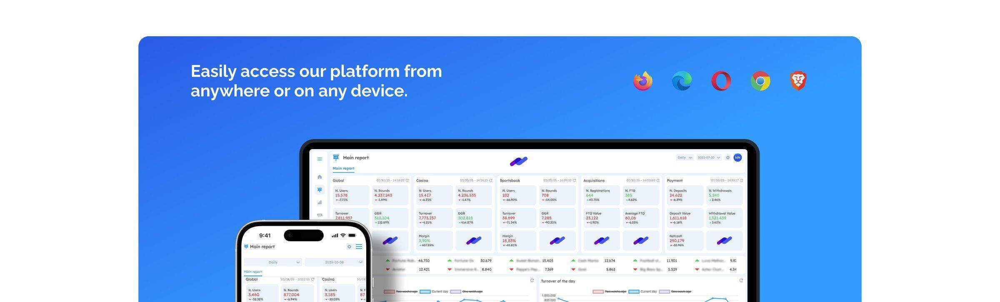
Case 01 — SaaS analítico
Dashboard analítico pra cassino online, redesenhado pra crescer sem o custo escalar junto e sem vazar dado sensível.
Contexto
BetMetrica é um dashboard em tempo real pra plataformas de cassino online. CEOs, compliance e gerentes de operação usam ele pra acompanhar histórico, entender o que acontece na plataforma e definir novas metodologias. O produto é dividido em módulos, que vão do relatório executivo e do detalhamento de cassino e apostas esportivas até a decomposição de métricas, a aquisição de usuários, o financeiro e o CRM, cada um atendendo uma parte diferente da operação. A primeira versão rodava inteira sobre Power BI, e era essa mesma estrutura que se vendia ao cliente.
Problema
Negócio: crescer em clientes significava crescer em acessos, e o custo escalava junto. O modelo também não dava pra vender em partes, porque o Power BI não deixava controlar permissão de forma granular.
Usuário: o sistema era difícil de filtrar e cruzar dado. A jornada vivia fragmentada em subtelas que deveriam estar juntas. E dado sensível, financeiro por exemplo, ficava visível pra qualquer pessoa com acesso ao painel. O Power BI também não tinha versão mobile, então acompanhar os números fora do computador simplesmente não era possível.
Solução
Trocamos o Power BI por uma estrutura própria, com jornada unificada e múltiplos formatos de exportação. No centro de tudo ficou um sistema de permissões que só mostra pra cada time as telas que fazem sentido pra ele, como CRM pro marketing e dados financeiros pro financeiro. Desenhamos também uma versão mobile, que não existia antes, pra acompanhar as métricas de qualquer lugar. Isso resolveu a fragmentação, fechou o vazamento de dado sensível, destravou o acesso fora do desktop e abriu espaço pra vender o produto em módulos separados.
Processo
Começou com um teste de usabilidade no sistema antigo em Power BI. Foi ali que a jornada fragmentada e a falta de segurança de dado apareceram com clareza. As soluções propostas passaram por teste A/B antes de virar padrão. O desenho foi de ponta a ponta, do sistema de componentes até o próprio sistema de permissões.
Resultado
A base de clientes cresceu de 2 para 6 desde o lançamento, com mais usuários ativos, e o custo parou de escalar junto com o número de acessos. Isso resolveu o problema de unit economics que travava o crescimento. O sistema de permissões também resolveu o ponto de segurança que preocupava o time.
Meu papel
Toquei o projeto ponta a ponta, da pesquisa, incluindo o teste de usabilidade no sistema antigo, passando pelo teste A/B e o design do componente à interface final, até o sistema de permissões. Também criei a identidade de marca do BetMetrica, com logo e manual de marca, o material comercial usado em feira e uma landing page do produto.
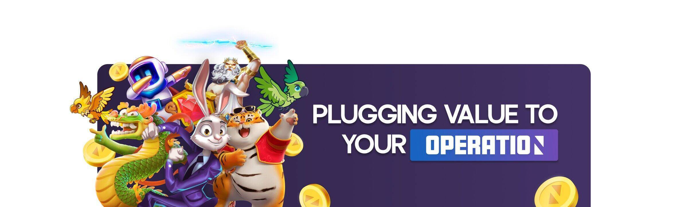
Case 02 — Plataforma B2B
Site institucional, ambiente de teste e backoffice pra uma operadora B2B que ainda não tinha presença digital nenhuma.
Contexto
A PlugnPlay é uma plataforma de agregação iGaming: reúne o catálogo de mais de 25 provedores, incluindo nomes como Evolution, Pragmatic Play, NetEnt e Playtech, numa integração única, e revende esse pacote pra outras operadoras de cassino. Quando entrei, a empresa não tinha nada online, nem site. Resolvi duas pontas: um site pra apresentar a empresa pro público, e uma área de teste pra quem já tava perto de fechar contrato experimentar os jogos antes de assinar.
Problema
Negócio: sem nada online, fechar negócio dependia só do contato comercial direto. Não tinha como mostrar o catálogo de jogos ou passar confiança antes disso.
Usuário: os clientes B2B precisavam de um jeito confiável de checar se um jogo específico estava no pacote, testar como ele funcionava e validar idioma e moeda antes de assinar.
Solução
Além do site institucional, desenhei um ambiente de teste no mesmo formato de um cassino online de verdade, o ambiente que o cliente final veria depois. Ele tem filtro por provedor, jogo e estúdio, registro detalhado de cada jogada (onde e quando o usuário clicou), e um mini backoffice com troca de idioma, moeda e histórico de jogadas pra validação.
Processo
Comecei com uma pesquisa de contexto pra entender como as empresas avaliavam e fechavam negócio sem nada online. Depois desenhei toda a interface, da vitrine pública ao uso interno, incluindo o mini backoffice e as ferramentas de verificação de jogadas.
Resultado
Com o ambiente de teste no ar, os negócios fecharam mais rápido e os clientes levaram menos tempo pra decidir. De quebra, ele passou a pegar erro de integração antes de virar problema. Ninguém pediu isso, mas o time não larga mais.
Meu papel
Criei cada interface, do site institucional, que é a vitrine pública, ao ambiente de teste completo, de uso interno e acessado por empresas em negociação avançada, incluindo o mini backoffice.
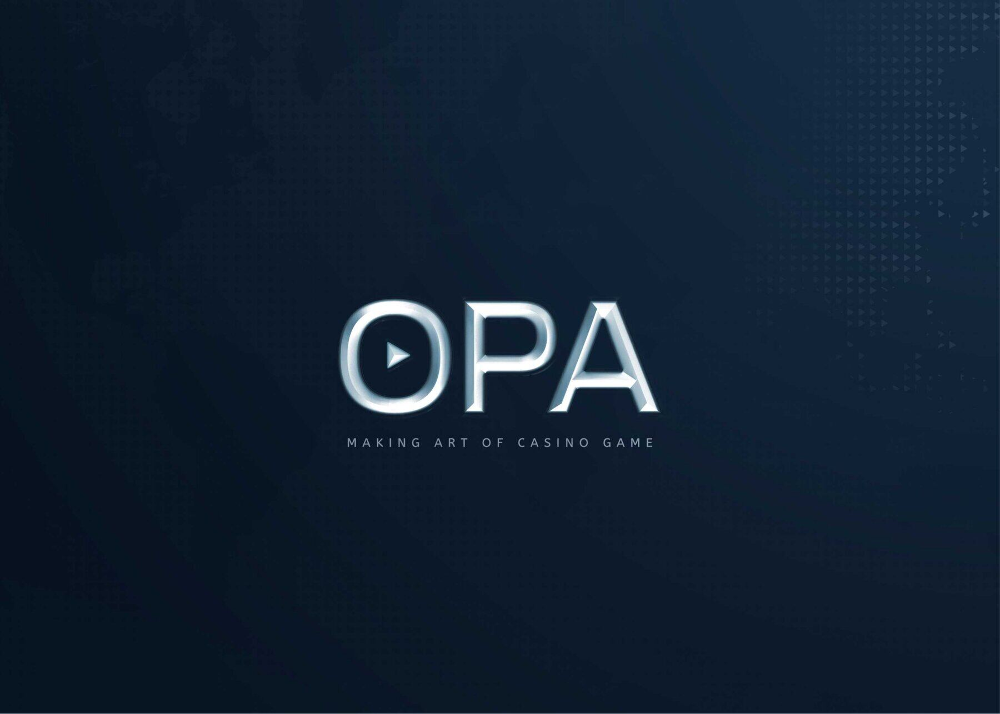
Case 03 — Material físico
Catálogo impresso de 32 páginas pra apresentar os jogos da OPA Games em feiras, onde wifi instável deixa o digital pra trás.
Contexto
Catálogo físico impresso dos jogos da OPA Games, pensado pra apresentação em feiras e encontros comerciais rápidos, de um estande a uma reunião informal ou até uma conversa de restaurante, com clientes em potencial, boa parte CEOs de agregadoras e cassinos.
Problema
Antes, a apresentação era feita por celular ou notebook. Isso obrigava o cliente a parar, sentar e prestar atenção total enquanto outra pessoa abria e conduzia a apresentação. Fricção logo no primeiro contato, bem no momento mais rápido e informal, tipo um estande de feira ou um encontro de minutos.
Solução
Um catálogo físico entregue direto na mão do cliente, que passa a folhear no próprio ritmo, sem depender de alguém mexendo no celular por ele. A hierarquia visual prioriza a arte de cada jogo pra chamar atenção primeiro. Os detalhes técnicos vêm depois.
Processo
Comecei pesquisando o contexto real de uso, como e onde a apresentação de fato acontecia, pra então definir formato, tamanho e organização das informações. A partir daí entrei na direção de arte, diagramação e produção gráfica do material inteiro, incluindo recriar cada tela de jogo em página, a partir do material gráfico que já existia.
Resultado
Feedback muito positivo do time comercial, principalmente pela facilidade de uso. O catálogo passou a ser distribuído pra empresas de interesse, e o cliente levava o material com ele depois do encontro. A apresentação passou a durar além do momento do pitch.
Meu papel
Toquei o projeto inteiro, da pesquisa de contexto de uso à direção de arte, diagramação e produção gráfica.
Páginas do catálogo
Recorte de algumas páginas do material impresso de 32 páginas: abertura, a seção sobre a empresa e os spreads de três jogos (Pyramids, AviaTurbo e Trevor Mines).
P. 01 / 32
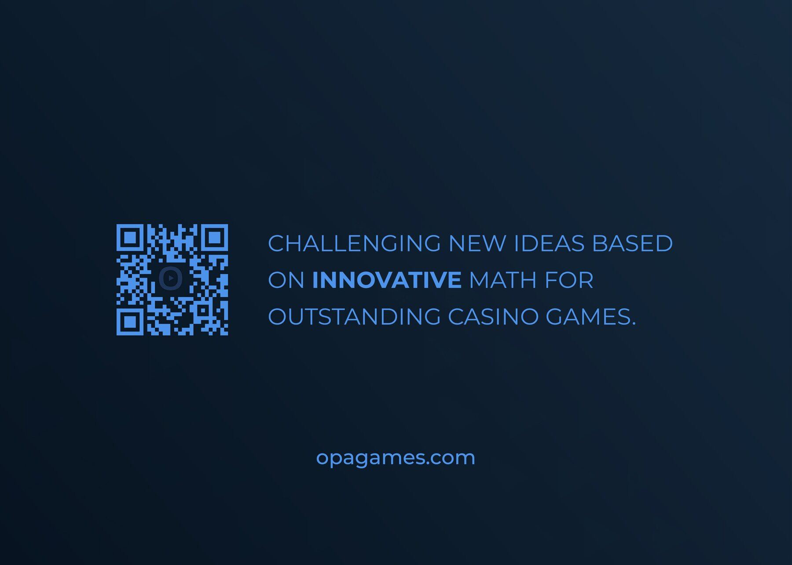
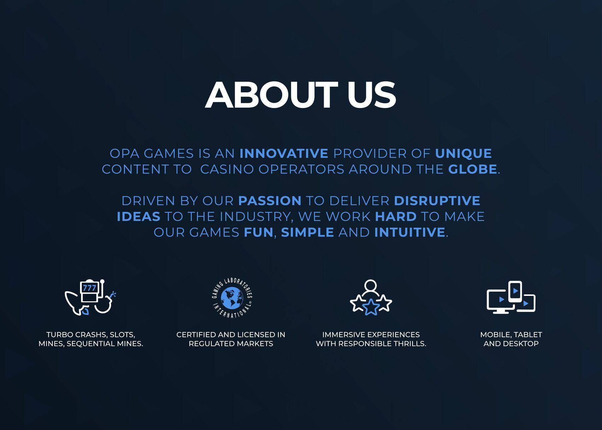
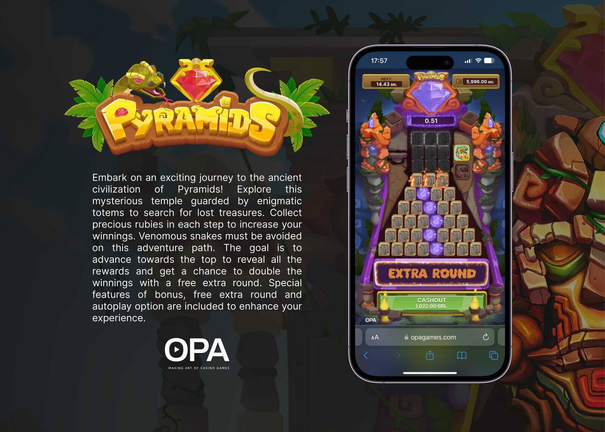
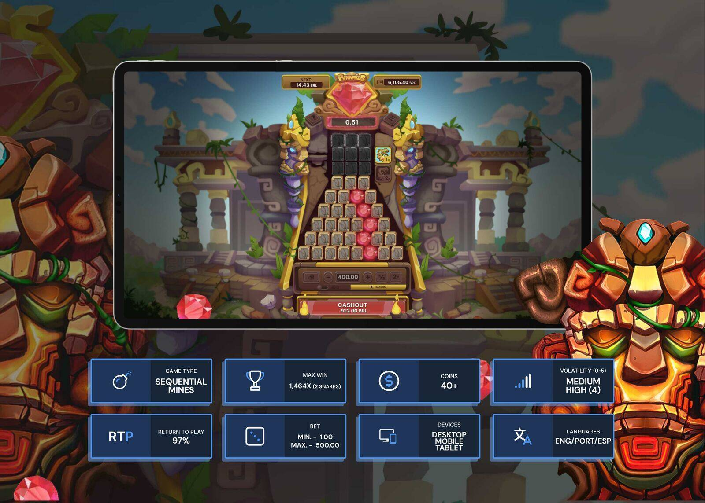
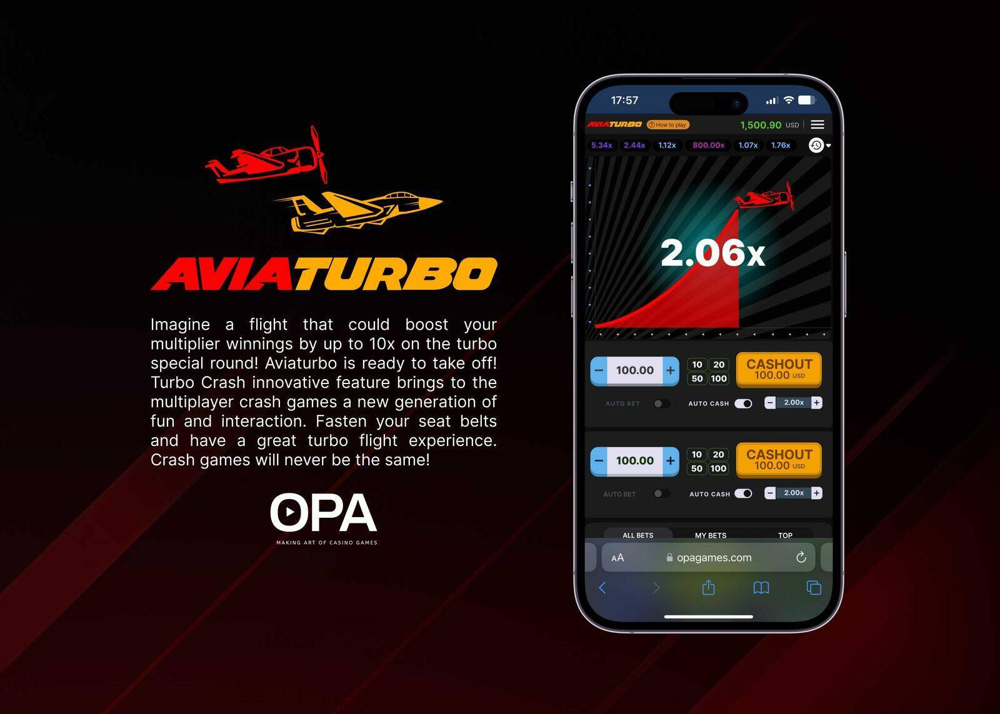
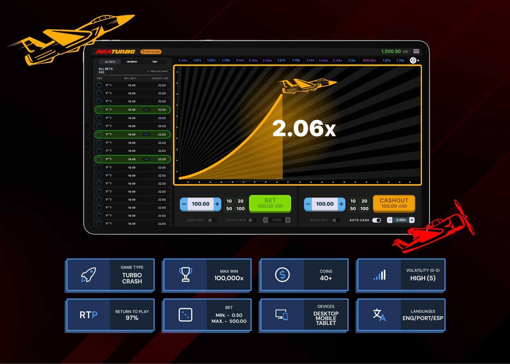
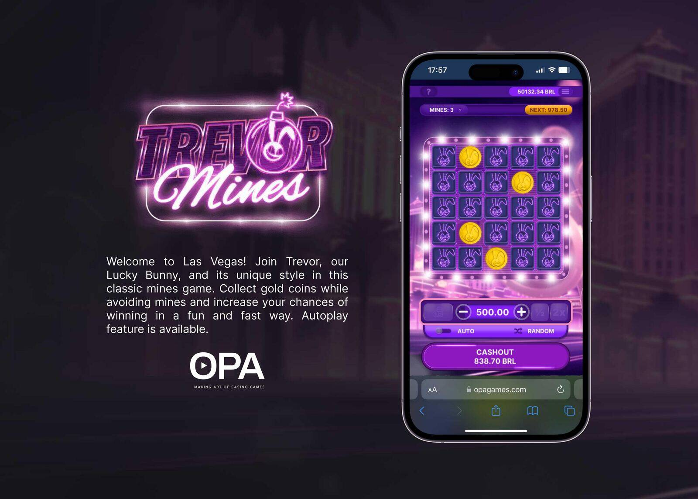
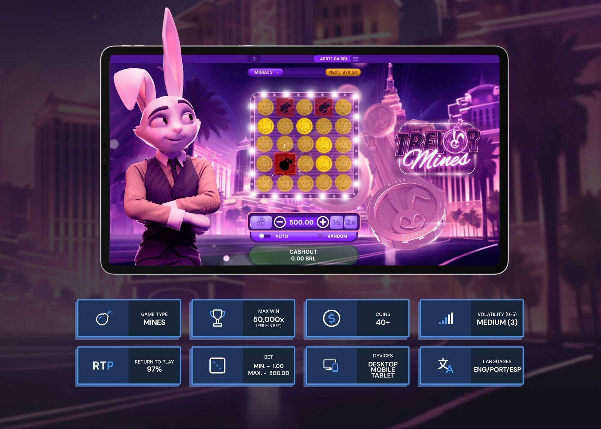
Mockup do impresso
O catálogo como ele chega na mão do cliente: peça impressa de verdade, não só a página digital.
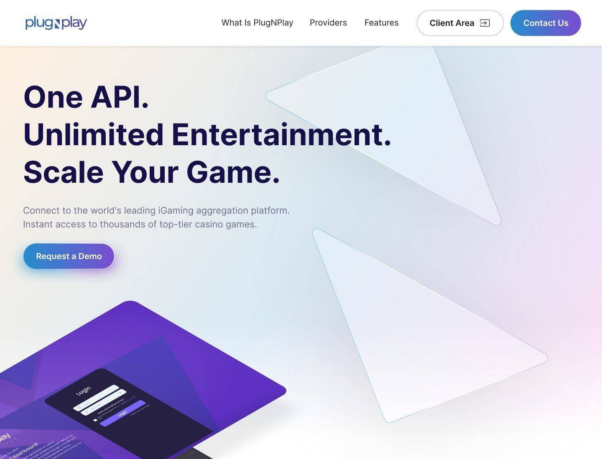
Case 04 — Produto & marca
Dois sites completos e diferentes entre si: um pra navegação com calma, outro pra funcionar rápido direto do estande.
Contexto
A OPA Games já tinha o catálogo físico pra apresentação em feira, mas ainda precisava de presença online. Coloquei no ar dois sites completos e diferentes entre si: o principal, com hero em vídeo e catálogo de jogos com página própria por jogo, e uma segunda versão mais compacta, pensada pra navegação rápida direto do estande.
Problema
Negócio: sem site, o material de vendas ficava só no papel e no contato direto, sem um lugar pra mandar quem quisesse ver o catálogo completo depois do primeiro encontro.
Usuário: quem queria conhecer os jogos antes ou depois da feira não tinha onde ver com calma, e o gate de idade precisava aparecer antes de qualquer conteúdo de cassino.
Solução
O site principal ganhou hero em vídeo, catálogo com página própria por jogo e verificação de idade antes de liberar o conteúdo. A versão compacta corta o que não é essencial, pensada pra funcionar bem num estande, com wifi instável e pouco tempo de atenção.
Processo
Levantei o que cada contexto de uso pedia, navegação completa em casa e navegação rápida no estande, e desenhei as duas versões, com hierarquia de conteúdo ajustada pra cada uma e o gate de idade implementado nas duas.
Resultado
O site principal passou a converter cerca de 30% dos visitantes em contato comercial. A versão compacta virou o material padrão de apoio em feira, ao lado do catálogo físico.
Meu papel
Cuidei do produto e da marca das duas versões, da estrutura e interface ao catálogo por jogo e ao gate de verificação de idade.
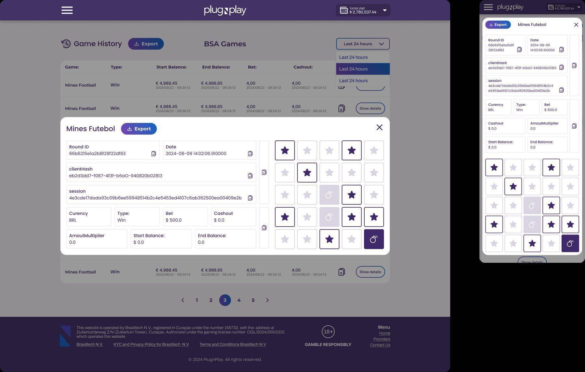
Case 05 — Pesquisa & protótipo
Sistema de feedback com mecânica de XP pra transformar retorno entre colegas em reconhecimento de verdade.
Contexto
Protótipo de um sistema interno de feedback com gamificação, pensado pra um contexto fora do setor de cassino. A ideia era transformar dar feedback em algo que gera retorno concreto pra quem participa, não só mais um formulário que ninguém preenche.
Problema
A pesquisa mapeou três barreiras que travavam esse tipo de iniciativa: falta de participação, falta de motivação pra manter o hábito e falta de clareza sobre o que acontecia com o feedback depois de enviado.
Solução
Um sistema onde cada feedback dado gera XP, trocável depois por produtos institucionais. A troca dá um motivo concreto pra participar, e o histórico de XP também mostra pra empresa quem está mais engajado no processo.
Processo
Comecei identificando as barreiras reais de participação, desenhei a mecânica de XP e as regras de troca, e prototipei a jornada completa, do envio do feedback até o resgate do produto.
Resultado
O projeto ficou pausado por mudança de prioridade antes de ir pra produção, mas a pesquisa e o protótipo ficaram prontos pra retomada, com as três barreiras já mapeadas e uma mecânica de engajamento testada no papel.
Meu papel
Fiz a pesquisa completa, desenhei a mecânica de gamificação e prototipei toda a jornada do sistema.
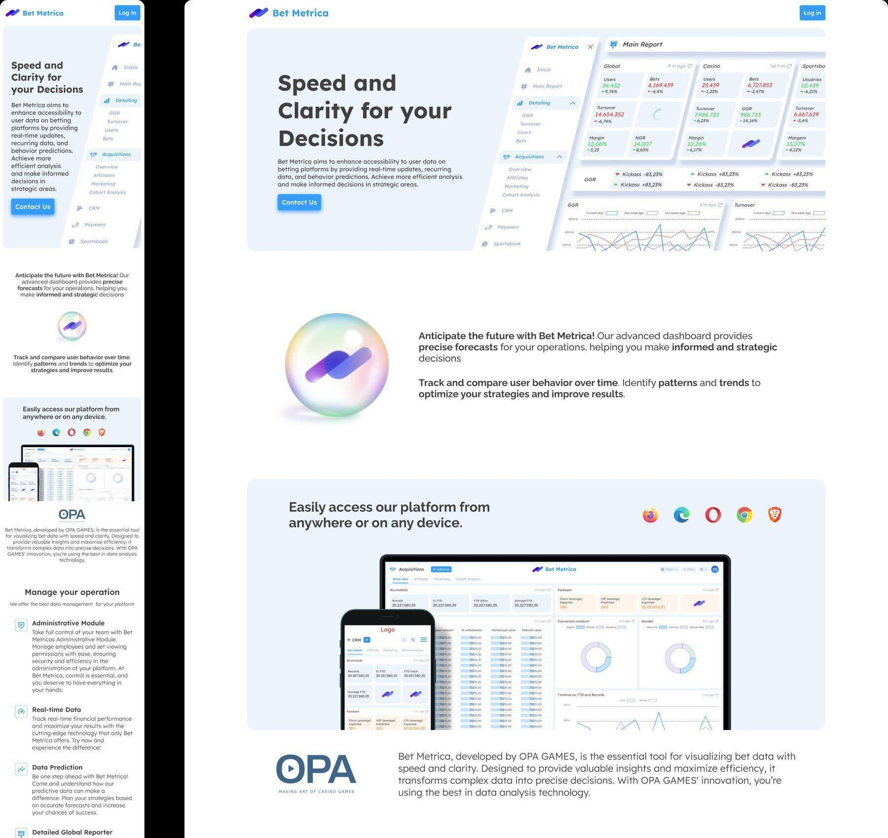
Case 06 — Identidade de marca
Identidade de marca pra uma empresa que cria dashboards B2B, com logo e manual de aplicação.
Contexto
O Grupo Platforme cria soluções em dashboard pra outras empresas, mas ainda não tinha uma identidade visual própria que representasse esse trabalho.
Problema
Sem marca definida, a empresa dependia de material genérico pra se apresentar, o que enfraquecia a credibilidade justamente num mercado técnico, onde a marca também comunica confiança.
Solução
Uma identidade visual construída em cima do que o grupo já fazia bem: organizar dado de forma clara. O logo e o manual de marca dão consistência pra qualquer material que a empresa produza depois.
Processo
Levantei o posicionamento e o público do grupo, e a partir daí desenhei o logo e construí o manual de marca, com regras de uso, cor e aplicação.
Resultado
A empresa passou a ter uma identidade própria e consistente pra usar em site, material comercial e apresentações.
Meu papel
Toquei todo o projeto de marca, da pesquisa de posicionamento ao logo e manual de marca.
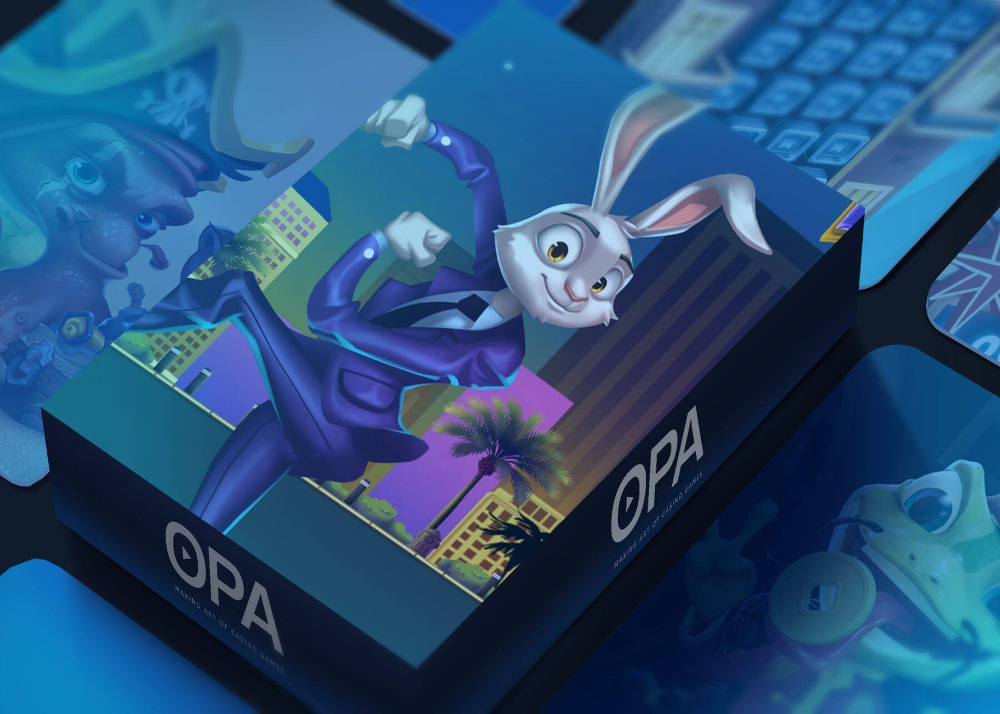
Case 07 — Moda & social
Gestão de Instagram e catálogo de coleção pra uma marca de moda que precisava de ritmo constante nas redes.
Contexto
A River Style precisava manter presença ativa no Instagram e lançar material novo a cada coleção, sem ter estrutura própria de design interna pra isso.
Problema
Negócio: sem alguém dedicado ao visual, o ritmo de posts caía e cada lançamento de coleção virava correria de última hora pra ter catálogo e material de divulgação prontos.
Usuário: quem seguia a marca via um feed inconsistente, sem identidade visual clara entre uma coleção e outra.
Solução
Atuação recorrente cobrindo o Instagram e o catálogo de produtos de cada coleção, com criativos animados (motion) pros lançamentos.
Processo
Mantive uma rotina de criação e aprovação de conteúdo alinhada ao calendário de lançamentos, cuidando do catálogo e do material de divulgação de cada coleção.
Resultado
A marca passou a manter um feed consistente e material pronto pra cada lançamento de coleção, sem depender de correria de última hora.
Meu papel
Cuidei da gestão de Instagram, do catálogo de coleção, e do motion pros lançamentos.
Case 08 — Design institucional
Direção de arte de material institucional e de evento pra uma empresa sem time de design próprio.
Contexto
A BSA precisava de material institucional recorrente, de post de Instagram a peça física de evento, sem ter estrutura própria de design pra dar conta disso.
Problema
Negócio: cada evento ou ação institucional demandava material novo, e sem um responsável fixo pelo visual, cada entrega virava um projeto do zero.
Usuário: o público que acompanhava a empresa não tinha uma identidade visual reconhecível de um material pro outro.
Solução
Atuação recorrente cobrindo o Instagram institucional e a direção de arte do material de evento, de camisa a copo e painel de feira, com acompanhamento direto da produção na gráfica até a entrega final.
Processo
Mantive uma rotina de criação de conteúdo institucional alinhada ao calendário de eventos, e assinei a direção de arte de cada peça, do briefing ao acompanhamento da produção gráfica.
Resultado
A empresa passou a ter material institucional pronto pra cada evento, com identidade visual consistente entre as peças.
Meu papel
Cuidei da gestão de Instagram institucional e da direção de arte dos materiais de evento, incluindo o contato direto com a gráfica.
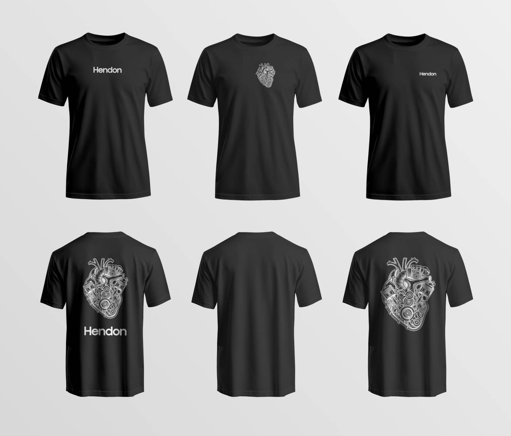
Case 09 — Estamparia & ilustração
Criação de estampas exclusivas por coleção pra uma marca de vestuário, do conceito criativo à arte final pronta pra impressão na peça.
Contexto
A Random encomendava estampas exclusivas pra cada coleção de roupa (como a Hendon), a partir de um briefing com o nome da estampa, o conceito criativo e referências visuais.
Problema
Negócio: cada coleção precisava de estampas com identidade própria, sem repetir fórmula visual de uma coleção pra outra.
Usuário: quem compra a peça busca um design que converse com o universo daquela coleção, não um gráfico genérico.
Solução
A partir do briefing de cada estampa (nome, conceito e referências), desenvolvi a ilustração — boa parte feita direto no Figma — e fechei a arte final no Photoshop, já pronta pra ir pra produção na peça.
Processo
Recebia o briefing de cada estampa com nome, conceito criativo e referências, desenvolvia a ilustração a partir disso e finalizava a arte de produção no Photoshop.
Resultado
Cada coleção lançou com estampas exclusivas, desenvolvidas do conceito à arte pronta pra impressão na peça.
Meu papel
Cuidei da criação das estampas: da leitura do briefing (nome, conceito e referências) à ilustração e arte final, como as 6 estampas da coleção Hendon mostradas abaixo.
Arraste pra mover · role ou pinça pra zoom · duplo clique alterna